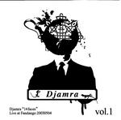

Home Artist links Label link

Djamra - 14 Faces Live@Fandango
| Artist: | Djamra |
| Title: | 14 Faces Live@Fandango |
| Label: | Vital Records |
| Length(s): | 31 minutes |
| Year(s) of release: | 2004 |
| Month of review: | [06/2004] |
Line up
Masaharu Nakakita - bass
Shinji Kitamura - alt sax
Dai Akahani - trumpet
Akihiro Enomoto - drums
Tracks
| 1) | Time Flies Like An Arrow | 4.34
|
| 2) | Assassin In Sin | 5.09
|
| 3) | Pliable Clockwork | 8.40
|
| 4) | To India | 13.35
|
Summary
A short diversionary live album of which I hope to have guessed
the title right. The album is on Vital Records which is a sublabel
of Poseidon, meant, it seems, for some more of the more obscure releases.
The music
Although the band does show to be able to bring their complex music
live on stage, the main problem lies in the sound quality. This is no
more than bootleg quality (not noisy, but strongly muffled).
Time Flies Like An Arrow, Assassin In Sin, Pliable Clockwork and
the long To India, each have their special elements, but in each the
rhythms and changes are complicated, there is a strong horn presence
and fun and melody are never far off. The band tends to fiddle around
at times, but the overall grooviness is undeniable.
Pliable Clockwork is quite jazzy overall, and pointers to Miles Davis
and all the rest (but with a sense of humour) and not difficult to find.
Notwithstanding the limited line-up I often get a big band feel.
And the shrill To India rocks, here the band ignores their jazz side.
Conclusion
The band plays well, but the sound quality is such that
I expect only fans of the band to want to have this. Others should
first read my review of Transplantation to see what these guys can do.
On that album you can hear much of the same music, but much clearer,
allowing you to better appreciate these excellent musicians.
© Jurriaan Hage